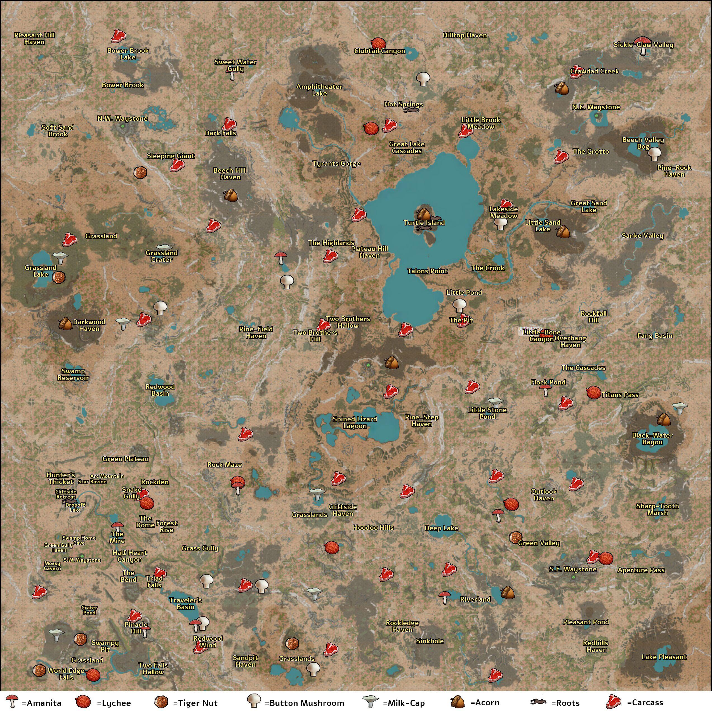

Guia de Campo Path of Titans
O guia definitivo para sobreviver e dominar os ecossistemas pré-históricos de Path of Titans.
Explorar CriaturasSobre o Guia
Em dúvida sobre qual dinossauro jogar? Analise e compare os status, pontos fortes e fracos de todas as criaturas oficiais. Encontre aqui a ferramenta definitiva para escolher seu próximo sobrevivente e prosperar no ecossistema.
Imagens do Jogo
Explore os Mundos
Sua saga pela sobrevivência se desenrola em dois continentes oficiais, cada um com biomas e desafios únicos. Conhecer o terreno é vital para encontrar recursos e planejar emboscadas.
Gondwa


Panjura



Junte-se à Sobrevivência
Pronto para começar sua saga? Adquira o jogo no site oficial e entre neste mundo pré-histórico!
Comprar Agora